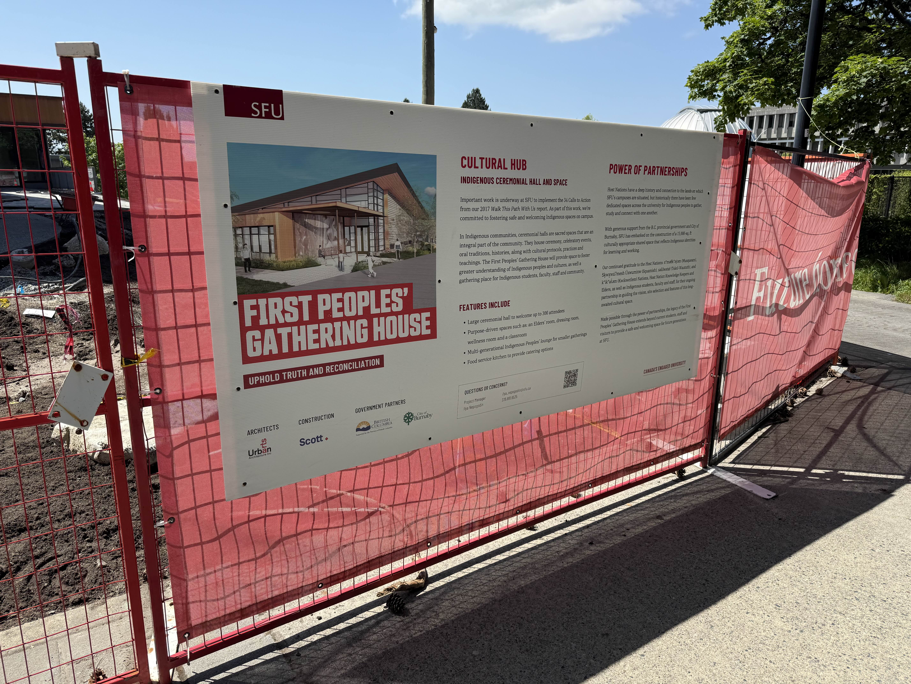
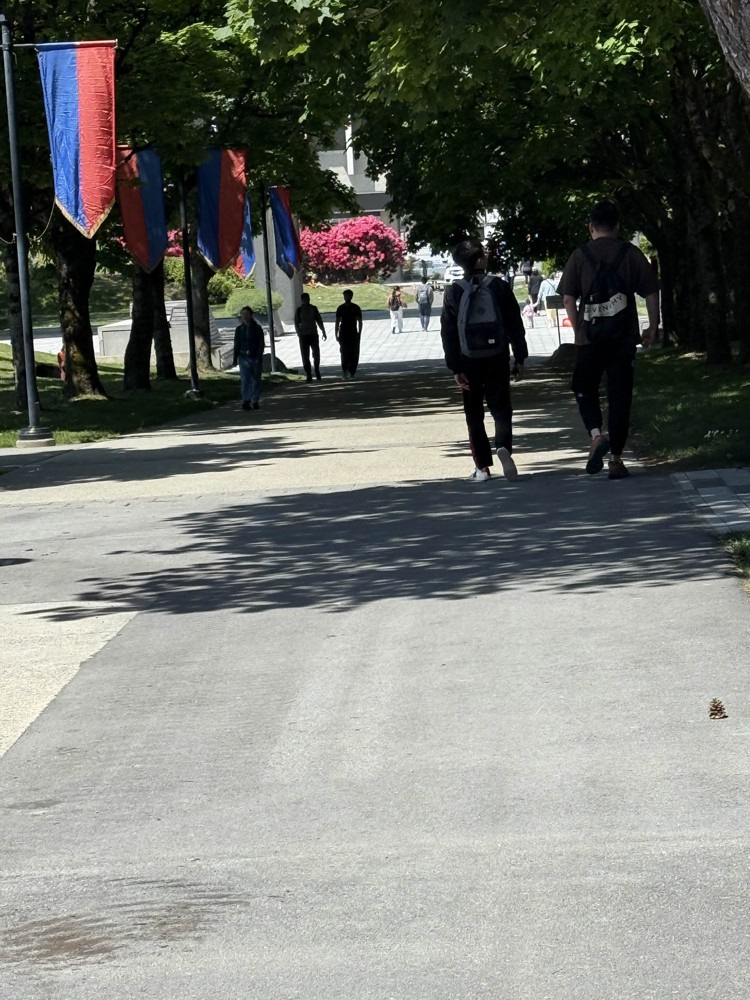

Key Concepts
How each concept relates to school
Authority: How power operates in classroom rules and hierarchy.
Reproduction: How schools reinforce social norms and inequality.
Alienation: When students feel disconnected or unseen.
Recognition: Who gets acknowledged and whose knowledge counts
Resistance: How students subtly or overtly push back.
Critical Inquiry Prompts
Questions to guide reflection and discussion
When did school make you feel unseen or unheard?
Think about moments of silence, mispronounced names, or being overlooked in class.
What classroom rule went unquestioned, but shaped your behaviour?
Rules like bathroom passes, assigned seating, or dress codes train compliance.
What does resistance look like in quiet forms?
It could be body language, silence, artistic expression, or humour.
Have you ever challenged authority without even meaning to?
Reflect on being honest, asking tough questions, or refusing to follow norms.
Theory in Context
How the theory applies to real-world situations
Nancy Fraser (2000). Recognition is about justice in cultural value—who is seen and respected. Misrecognition harms participation.
Used here to frame inclusive classrooms and student voice.
Henry A. Giroux (1983). Students resist schooling through culture, discourse, and practice; educators can read these as political acts.
Informs prompts and quiz items on resistance.
Michael W. Apple (1979). School knowledge and routines reproduce inequalities unless critically examined.
Guides analysis of uniforms, tracking, and testing.
Michel Foucault (1977). Discipline organizes bodies and time; schools operate through surveillance and normalization.
Connects to spatial rules and authority on campus.
Karl Marx (1844/1978). Alienation occurs when individuals are separated from the products of their labor, the process of work, their own potential, and from others.
Frames discussion of student disconnection from learning, purpose, and community.
Image Reflections

Recognition: This image represents recognition of Indigenous culture and space on campus. It aligns with efforts to address historical erasure and foster inclusive learning environments.

Authority:This image invites reflection on authority and uniformity in daily student routines—how structure and movement on campus reflect institutional control or autonomy.

Reproduction / Resistance:This sign acts as a metaphor for exclusion and power dynamics. Who gets access to space, and what barriers (physical or symbolic) are in place in education?
Quick Knowledge Check
References
- Apple, M. W. (1979). Ideology and curriculum. Routledge & Kegan Paul.
- Foucault, M. (1977). Discipline and punish: The birth of the prison. Pantheon Books.
- Fraser, N. (2000). Rethinking recognition. New Left Review, 3, 107–120.
- Giroux, H. A. (1983). Theory and resistance in education: A pedagogy for the opposition. Bergin & Garvey.
- Marx, K. (1978). Economic and philosophical manuscripts of 1844. In R. C. Tucker (Ed.), The Marx-Engels reader (2nd ed., pp. 66–125). W. W. Norton & Company. (Original work published 1844)